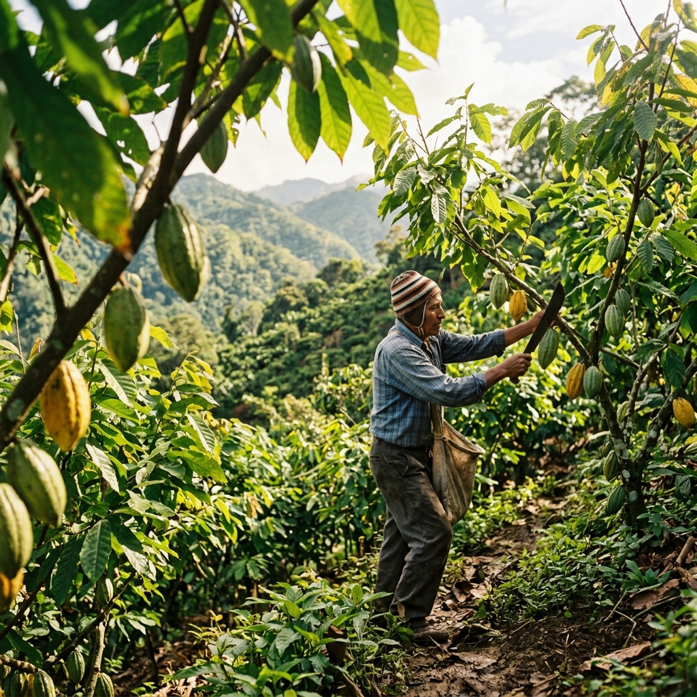

El conocimiento agrícola
a tu alcance.
Explora precios actualizados, descubre nuevas técnicas de cultivo y conecta con expertos de la región sin barreras ni registros.
Las 7 Fases del Cultivo y el Clima
Selecciona la fase actual de tu plantación de Café/Cacao para recibir recomendaciones adaptadas al clima de hoy.
¿Qué cultivas?
Fase 1: Germinación y Semilla
En esta etapa inicial, la semilla requiere humedad constante pero sin encharcamientos para despertar el embrión y brotar exitosamente.
¿Cómo identificarlo en el campo?
- Las semillas están recién sembradas en camas o bolsas.
- Aún no hay hojas visibles.
- Solo se observa la ruptura de la cáscara y asoma una pequeña raicilla blanca.
Impacto del Clima Actual (Lluvias ligeras)
Las lluvias actuales son beneficiosas. Mantén los germinadores bajo sombra parcial. Si la lluvia arrecia, asegúrate de tener cobertores plásticos listos.
Todo lo que necesitas en un solo lugar
Información verificada, libre y estructurada para mejorar el rendimiento de tus cultivos.
Consultas Rápidas
Encuentra información validada de Senasa sobre plagas, normativas y manuales agrícolas.
Probar BuscadorBiblioteca Pro
Herramientas financieras, base de datos de insumos en vivo y calculadoras de fertilización.
Abrir BibliotecaDirectorio Expertos
Contacta con ingenieros y técnicos certificados. Lee reseñas y solicita asesoría hoy mismo.
Ver Expertos